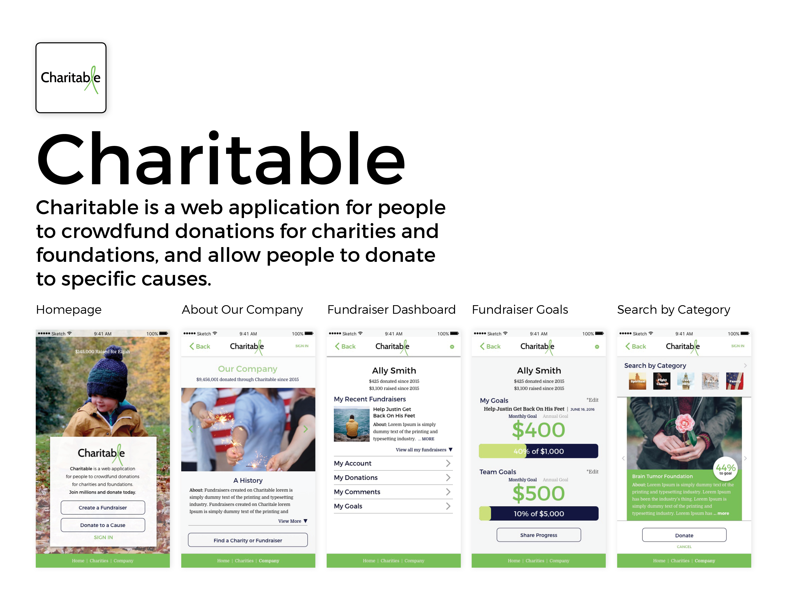
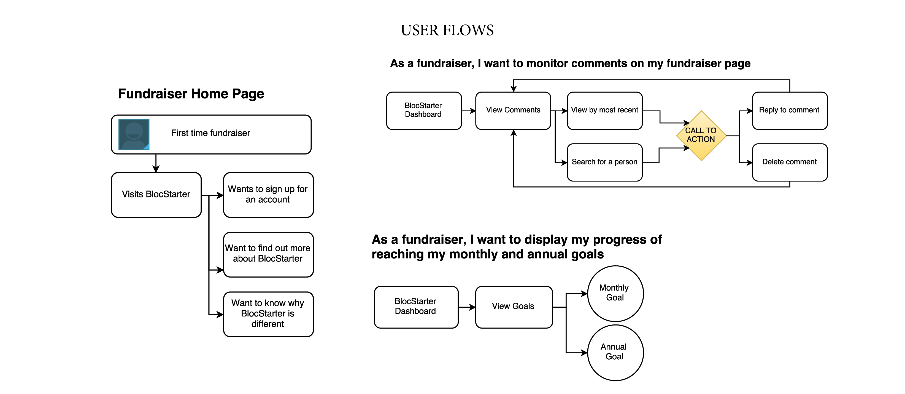
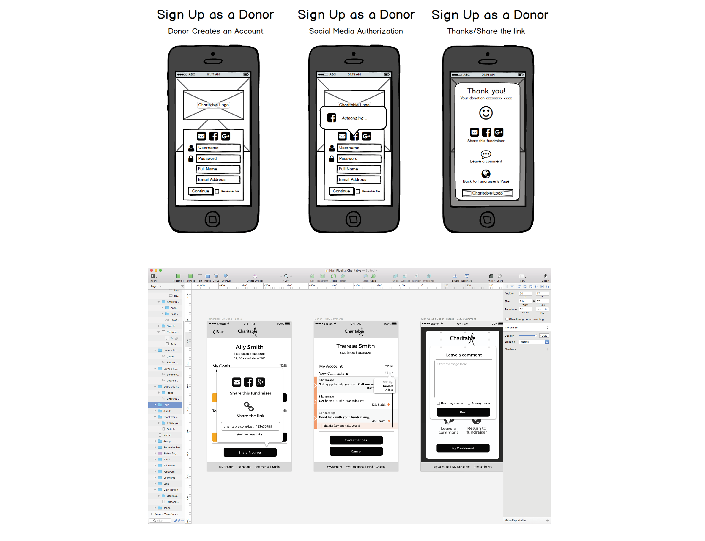
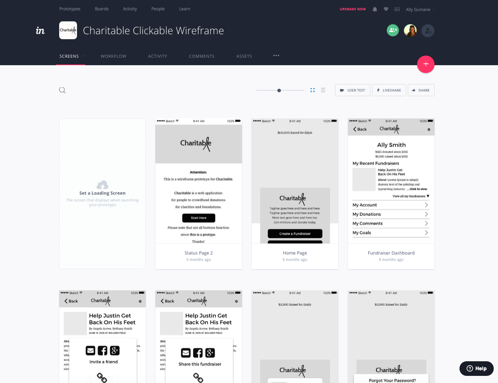

Charitable is a web application I prototyped for a Bloc class project. My goal was to design a web application for users to crowdfund donations for charities and foundations, and allow donors to donate to specific causes.
Charitable is the first app I prototyped. This project challenged me to think about user processes in a new way. I had to think about the two main user groups and their main functions: how a fundraiser can collect donations and meet goals; and how a donor can search and contribute to specific causes.
I designed Charitable’s logo to include a ribbon in the title, for users to automatically recognize its association with chariable causes.
I used bright colors paired with a neutral gray.
As a fundraiser ...
As a donor ...
Using Draw.io, I created many user flows for the fundraiser and the donor. Each type of user had a unique experience. I mapped several different user flows, and then concentrated on a smaller set of those flows.
Using Balsamiq, I sketched out my ideas for the low fidelity wireframes for this project. For my high fidelity wireframes that I designed in Sketch, I added spot color, icon details, button details and more structure.
I uploaded all wireframes to the InVision site and added interactive buttons to show the flow on the interactive prototype. This was one of my favorite parts of this project because I could really see the app coming together. It was challenging to get the user back to the home page everytime. I used a lot of my project time making sure the user wouldn't get stuck on a page. View my project on InVision.
This project was a huge learning curve for me. I designed and prototyped a total of 48 screens on InVision. Although I did not code this project, I was able to spend a lot of time learning how to best serve the user, build interactive prototypes and solve issues that pop up along the way.
Check out this project on InVision.